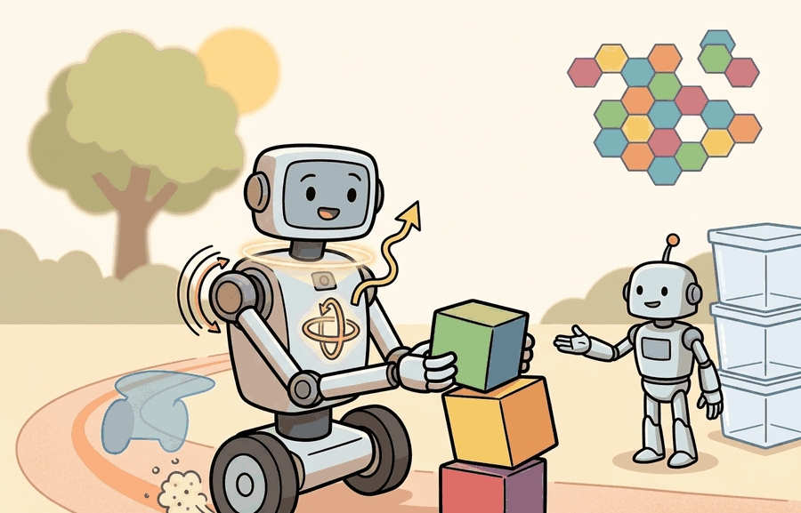

"The world did not tell the robot it had moved. The encoders did."
A Wheel That Kept Its Own Counsel

IMU, wheel odometry, joint encoders, proprioception is one lens on sensors, perception hardware, and state estimation. We study it because an embodied agent needs decisions that survive contact with noisy sensors, delayed effects, and changing environments.
This section develops the technical contract for IMU, wheel odometry, joint encoders, proprioception into a usable mental model. First we define the object of study, then we connect it to the agent loop, then we test it with a compact implementation.
The key question in IMU, wheel odometry, joint encoders, proprioception is practical: what must the agent know, what can it observe, what action is available, and what evidence shows that the action worked under the stated conditions?
A representation earns its place when it changes the measurable action interface. In IMU, wheel odometry, joint encoders, proprioception, the reader should keep asking which decision becomes easier, safer, or more reliable.
Theory
For IMU, wheel odometry, joint encoders, proprioception, the practical design rule is to make the interface inspectable before optimization begins: inputs, outputs, units, latency, bounds, and failure labels should all be visible in the saved artifact.
The mechanism in IMU, wheel odometry, joint encoders, proprioception is the contract between representation and action. Name what enters the module, what leaves it, which assumptions make that transformation valid, and which log would reveal a bad handoff.
Worked Example: Dead Reckoning and IMU Drift
An inertial measurement unit reports linear acceleration and angular rate, never position directly. To get position you integrate acceleration twice (velocity, then position), a process called dead reckoning. The trouble is that integration also accumulates error. A real accelerometer reading is $a_{\text{meas}} = a_{\text{true}} + b + n$, where $b$ is a slowly varying bias and $n$ is white noise. The bias is the killer: a constant bias $b$ double-integrates into a position error that grows like $\tfrac{1}{2} b t^2$, quadratically in time. Gyroscope bias behaves the same way for heading, and a wrong heading then steers the whole position estimate sideways. This is exactly why an IMU alone cannot localize for long, and why it must be fused with an absolute reference such as a camera, wheel odometry, or GPS.
# 1D dead reckoning: integrate a noisy, biased accelerometer to position.
# Truth: the body sits still, so true accel, velocity, position are all 0.
import numpy as np
dt = 0.01 # 100 Hz IMU
steps = 2000 # 20 seconds
rng = np.random.default_rng(1)
accel_bias = 0.05 # m/s^2 constant bias (uncalibrated)
accel_noise = 0.02 # m/s^2 white noise (1 sigma)
a_meas = accel_bias + rng.normal(0.0, accel_noise, size=steps)
vel = np.zeros(steps + 1)
pos = np.zeros(steps + 1)
for k in range(steps):
vel[k+1] = vel[k] + a_meas[k] * dt # integrate accel -> velocity
pos[k+1] = pos[k] + vel[k+1] * dt # integrate velocity -> position
t = steps * dt
print(f"after {t:.0f} s: velocity drift = {vel[-1]:.2f} m/s")
print(f"after {t:.0f} s: position drift = {pos[-1]:.2f} m")
print(f"closed-form bias term 0.5*b*t^2 = {0.5*accel_bias*t**2:.2f} m")The fragment should expose one inertial or encoder update and its covariance. robot_localization, tf2, and ROS 2 bag replay then provide the maintained path for fusing motion streams.
Practical Recipe
- Write the observation, action, and success metric before choosing a model.
- Build a baseline that is simple enough to debug by inspection.
- Add the library implementation only after the baseline behavior is understood.
- Record failures as structured cases: perception error, state error, planning error, control error, or evaluation error.
- Run at least one perturbation test before trusting the result.
The common mistake in IMU, wheel odometry, joint encoders, proprioception is to celebrate the component score before checking the closed-loop handoff. The failure usually appears at the boundary: stale state, wrong frame, delayed action, saturated actuator, or metric that ignores the real task cost.
A robotics team using IMU, wheel odometry, joint encoders, proprioception should log not only final success, but intermediate observations, chosen actions, controller status, and recovery events. The logs reveal whether the method is solving the task or merely passing the easiest episodes.
Treat imu, wheel odometry, joint encoders, proprioception like a control-room label. If the label does not tell a future debugger what moved, what sensed, or what failed, it is decoration rather than engineering knowledge.
For IMU, wheel odometry, joint encoders, proprioception, treat frontier claims as hypotheses until they expose enough detail to reproduce the result: data boundary, embodiment, controller interface, evaluation panel, and failure cases.
Can you name the observation, state estimate, action, success metric, and most likely failure mode for IMU, wheel odometry, joint encoders, proprioception? If not, the system boundary is still too vague.
Production Pattern
IMU, wheel odometry, joint encoders, proprioception sits inside the Part II robotics contract: geometry defines where things are, kinematics defines what motion is possible, dynamics defines what motion costs, control defines how errors are corrected, and sensing defines what the agent can know on time.
Proprioceptive streams need bias, drift, quantization, and timestamp handling before fusion. This makes the section useful to students, builders, and researchers at the same time: the idea has an intuitive role, a formal interface, a runnable check, and a failure mode that can be reproduced.
For IMU, wheel odometry, joint encoders, proprioception, state estimation converts imperfect observations into a belief usable by control. Preserve calibration, covariance, timestamp, frame, dropout behavior, and latency.
| Tool or Library | What It Handles | Verification Check |
|---|---|---|
| OpenCV | handles camera models, calibration, projection, and vision preprocessing | Verify intrinsics, distortion, image timestamp, and frame-to-camera transform. |
| ROS 2 robot_localization | fuses odometry, IMU, GPS, pose, and twist streams through ROS estimation nodes | Verify covariance, frame IDs, timestamps, and rejected measurement counts. |
| FilterPy | teaches and prototypes Kalman, extended Kalman, unscented, and particle filters | Verify process noise, measurement noise, innovation, and covariance growth. |
| Kalibr | supports practical work on IMU, wheel odometry, joint encoders, proprioception | Verify the library output against the hand-built baseline on one small case. |
| Open3D | supports practical work on IMU, wheel odometry, joint encoders, proprioception | Verify the library output against the hand-built baseline on one small case. |
Use this recipe when turning IMU, wheel odometry, joint encoders, proprioception into code, a simulator experiment, or a robot diagnostic. The point is not to use every library. The point is to keep the hand-built baseline and the maintained-tool path comparable.
- Define each sensor message with units, frame, timestamp source, calibration file, and covariance meaning.
- Run a static test, a slow-motion test, and a dropout test before fusing streams.
- Compare the hand filter with FilterPy or ROS 2 robot_localization using identical measurements and noise settings.
- Log innovation, covariance, delayed messages, rejected measurements, and downstream control effect.
- Treat perception output as a belief with uncertainty, not as ground truth handed to the controller.
For IMU, wheel odometry, joint encoders, proprioception, compare methods only through one saved artifact that preserves the inputs, outputs, units, timestamps, latency budget, configuration, seed, metric definition, and failure labels relevant to this section. The comparison is meaningful only when the same script evaluates the same panel.
Extend the section exercise by adding one perturbation specific to IMU, wheel odometry, joint encoders, proprioception and one latency or uncertainty check. Save the result in the EvidenceRecord schema, then explain which library output you trust and why.
Proprioceptive failures often look like weak control. Check IMU bias, encoder quantization, wheel slip, joint zero offsets, sampling rate, and integration frame before tuning the policy.
Technical Core
IMU, wheel odometry, joint encoders, and proprioception are the robot's self-sensing channels. They are fast and local, which makes them excellent for control, but their errors accumulate when the outside world is not used to correct drift. Figure 8.3.T summarizes the chain this section must preserve when moving from a teaching example to a real embodied system.
A compact wheel odometry model is $\Delta s=(r/2)(\Delta\phi_R+\Delta\phi_L)$ and $\Delta\theta=(r/b)(\Delta\phi_R-\Delta\phi_L)$, where $r$ is wheel radius, $b$ is wheel separation, and $\Delta\phi$ are encoder increments. An IMU model writes measured acceleration as $a_m=a+b_a+\eta_a$ and angular velocity as $\omega_m=\omega+b_\omega+\eta_\omega$. Bias terms $b_a$ and $b_\omega$ explain why integrating inertial data without correction eventually drifts.
Consider a specific case: a TurtleBot 3 Burger has wheels of radius $r = 0.033$ m separated by $b = 0.160$ m, each equipped with a 3,591-count-per-revolution magnetic encoder. One full wheel revolution produces 3,591 encoder ticks, giving a linear resolution of $2\pi r / 3591 \approx 0.058$ mm per tick. If the robot drives a nominal 1 m straight line and the right encoder reads 4,834 ticks while the left reads 4,819 ticks, the odometry equations yield $\Delta s \approx 0.999$ m and a heading error of $\Delta\theta \approx 0.0031$ rad (about 0.18 degrees). That heading error looks negligible, but compounded over ten straight segments of 1 m each it steers the robot 31 mm off course laterally: small encoder asymmetries accumulate into navigation-relevant errors over any real mission distance. This is why wheeled platforms that cannot rely on GPS indoors pair odometry with a LiDAR scan-matcher such as Cartographer or a visual odometry front-end such as ORB-SLAM3 to bound the lateral drift.
- Verify encoder resolution, gear ratio, sign convention, joint zero, and update rate.
- Estimate IMU bias while the robot is stationary, then repeat after warm-up.
- Run straight-line, turn-in-place, and stop-start tests to expose slip and backlash.
- Compare integrated odometry against an external reference such as motion capture, AprilTags, or LiDAR scan matching.
- Log saturation, dropped messages, and timestamp jitter before blaming the controller.
What: a joint encoder reports the angular position of a motor shaft, typically as an absolute or incremental count. Why: the controller needs to know where each limb is before it can compute the torque command that moves it somewhere else; without this feedback, even a well-tuned PD law diverges. How: an incremental optical or magnetic encoder generates pulses as the shaft rotates; firmware integrates the count and divides by ticks-per-revolution times the gear ratio to yield joint angle. On the Franka Emika Panda, 14-bit absolute encoders on each of seven joints give a resolution of about 0.022 degrees per step, fine enough that quantization is negligible compared to joint compliance and gearbox backlash. When it breaks: at startup, an incremental encoder does not know its absolute position until a homing routine drives the joint to a hard stop or a reference mark; missing that routine sends the controller into a region it believes is safe but is not. Backlash in the gearbox means the encoder can report a stationary shaft angle while the output link is still moving, creating a lag that appears as oscillation at contact boundaries.
| Signal | What It Provides | Diagnostic Check |
|---|---|---|
| IMU acceleration and gyro | High-rate changes in linear acceleration and angular velocity. | Stationary bias test, Allan-style drift inspection, and gravity direction sanity check. |
| Wheel odometry | Fast planar motion estimate for mobile bases. | Straight-line error, turn-in-place error, and slip under different floor materials. |
| Joint encoders | Joint position, velocity, and sometimes effort proxies. | Zero offset, backlash, limit consistency, and commanded-versus-measured lag. |
| Proprioceptive contact cues | Unexpected resistance, impact, or loss of support. | Residual between expected torque and measured response during repeatable contact. |
Expected output is a drift curve: error should grow predictably when no external correction is available, then contract when a trustworthy external measurement arrives. A flat drift curve during wheel slip usually means the covariance model is too optimistic.
A proprioceptive estimate fails when wheel slip, IMU bias, encoder wraparound, or joint backlash is hidden behind a smooth pose trace with unrealistically small covariance.
Section References
Core references for IMU, wheel odometry, joint encoders, proprioception: Modern Robotics; Murray, Li, and Sastry; Siciliano et al.; LaValle; and official documentation for Drake, MuJoCo, Pinocchio, CasADi, python-control, GTSAM, ROS 2, and OpenCV as applicable.
Use these references to check notation, frame conventions, units, solver assumptions, and maintained-library behavior.
IMU, wheel odometry, joint encoders, proprioception is useful when it makes the perception-action loop more reliable, not when it merely adds a more impressive model name.
Design a method-matched experiment for IMU, wheel odometry, joint encoders, proprioception. Specify the environment, observations, actions, metric, one perturbation, and the library output you would compare against the hand-built baseline.